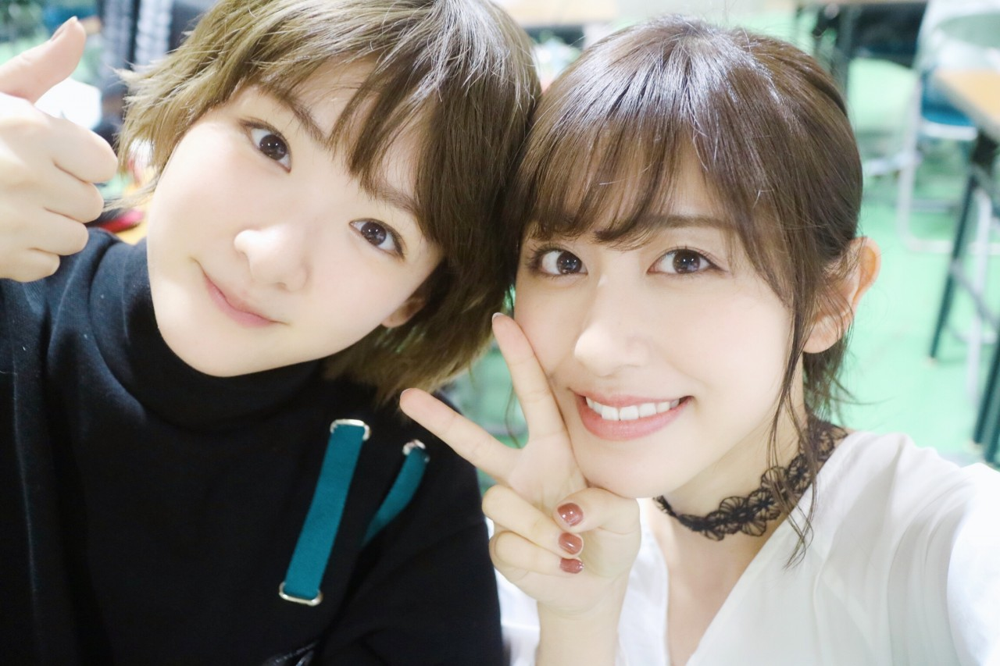
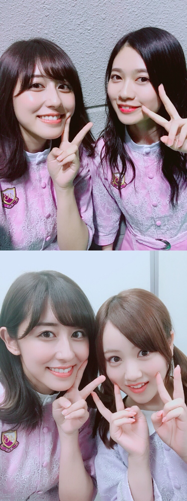
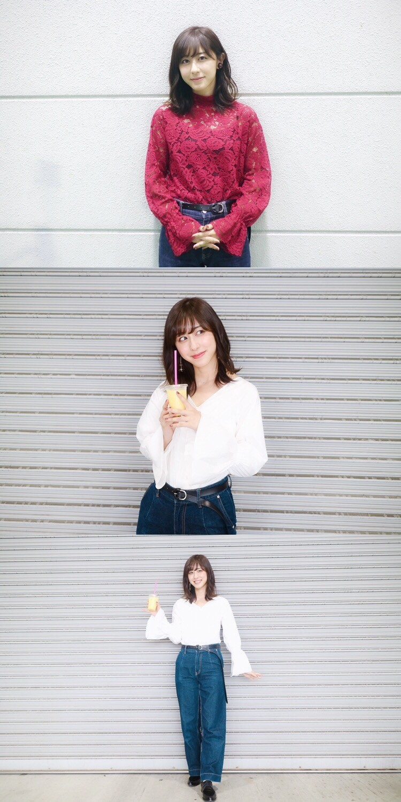
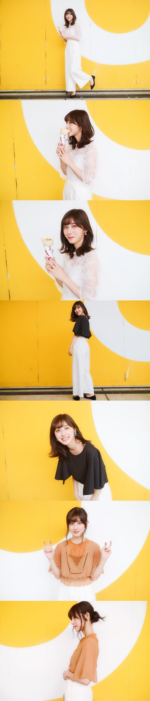

| 2018/05 10 Thu | 斎藤ちはる GWが過ぎて。 |
こんにちは！
皆さんいかがお過ごしでしょうか〜
私はアンダーライブ中部シリーズが
ついに来週に迫り準備にバタバタしております...
準備は大変だけど
歌うのも踊るのも好きだなって改めて思えたり
メンバーとワイワイ話す時間が楽しくて
毎日充実した日々を送っているよ！
GWは生駒ちゃんの卒業がありました。
生駒ちゃん、卒業おめでとう。
全握で最後生駒ちゃんと一緒にAgainstを踊る事が出来て良かった。
格好良さ、全力さ、自信、余裕、全てが生駒らしくて素敵でした。
生駒ちゃんと7年半共に乃木坂として活動出来て嬉しかったよ！
いつも先頭に立ってみんなを引っ張ってくれてありがとう。

また別のステージで活躍している生駒ちゃんと会える事を楽しみにしています！
大好きだよ！！
また、GWは握手会が沢山ありました！
沢山の方にお会いできてとても嬉しかったです。
貴重なGWを使ってまで会いに来てくださって
本当にありがとうございました！
全国握手会大阪は蘭世と、
幕張はみなみと一緒のレーンでした！

髪型は二日間とも外ハネにしました
今回の新制服も女の子らしくて春らしくて可愛いよね！
個別握手会は大阪と名古屋でありました。

大阪はワイドデニムパンツをベースに
コーディネートしてみました☺︎
長めのベルトも最近の流行だよね！
1部は赤いレーストップスで
2.3部はコットン白シャツ。
白シャツは古着屋さんでゲットしました〜
古着屋さんで掘り出し物を見つけた時の達成感が楽しい！

ちなみに写真はほとんど毎回
私のミラーレスを使って、かりんに撮ってもらっています。
写真部でカメラに慣れているので、頼みやすいし上手！
大阪は春らしく、白のワイドパンツをベースにしてみました◎
今回の服見たらわかると思うけど
白いパンツって上手に着回せる！
おススメです
1部は白いオーガンジー素材のトップスにピンクのお花が入ったイヤリング、
2部は背中が少しだけ開いた黒のトップスに柄のイヤリング、
3部は茶色のシフォントップスに黒のイヤリング。
私はイヤリングが大好きなので
毎回服に合うものに替えているんだ〜
握手会来たらチェックしてみてね
あとメイクも大好きなんです！
ピンクメイク、オレンジメイク、赤リップ主役のメイクなど
その日の気分やお洋服に合わせて変えてみたり
新作コスメをチェックしてみたり。
今度コスメ紹介をしてみようかな？と思っています！
この写真はオレンジメイク！
また更新します〜
斎藤ちはる